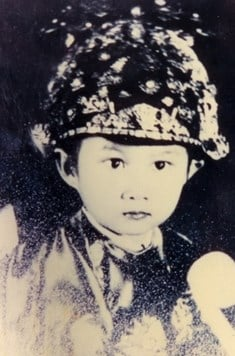
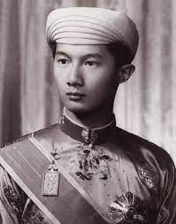

Ngày 12 tháng 8 năm 1947, tại Huế, hàng ngàn người tụ họp trước cửa Ngọ Môn yêu cầu Bảo Đại trở về nắm quyền bính. Giải pháp Bảo Long, Thành Thái hay ai khác không còn được mấy ai nhắc đến. Bà Nam Phương chẳng hiểu ra sao nữa nhưng rồi bà cũng không quan tâm. Điều bà quan tâm, lo lắng lúc này là các con bà phải được tiếp tục học hành.
Và chính những ngày tháng đó, bà Nam Phương đã quyết định rời khỏi Việt Nam trong nỗi đau phải tạm biệt mảnh đất đã sinh ra bà và các con, trong niềm nhớ thương khôn nguôi những người thân yêu, những người dân xứ Việt mà bà đã sống nhờ họ, cho họ và vì họ. Giờ phút chia tay thật cảm động. Nhìn những giọt nước mắt lăn dài trên gò má người mẹ đã già nhiều sau những lo lắng cho bà và các con, nhìn ánh mắt buồn của người chị gái và cảnh các con bà ôm hôn các anh chị em họ, lòng bà se lại một nỗi buồn khó tả. Ra đi mà chưa hẹn ngày trở lại. Bà sẽ lại đến nước Pháp nhưng rồi bà chưa biết những diễn biến tiếp theo của cuộc đời sẽ ra sao. Một nách năm đứa con, với những mối quan hệ giữa bà và nước Pháp không còn vô tư như trước nữa. Vì các con, bà phải quyết ra đi khi bà có linh cảm rằng cuộc chiến tranh sẽ tiếp diễn và sẽ căng thẳng hơn trước nhiều nữa. Lòng bà vẫn mặc cảm xót xa. Biết bao giờ bà lại được trở về mảnh đất quê hương của mình? Thời thơ ấu đã qua, thời gian được học tập vô tư tại Pháp đã qua và thời vàng son cũng đã chấm dứt.
Bà ra đi không phải vì kinh tế vì gia đình bà thừa đủ tài chính để bà và các con bà sống mà không cần phải làm gì. Nhưng bà không phải là loại người dùng tiền để trưng diện, khoe khoang hay để xa xỉ cho những nhu cầu, sở thích cá nhân mình. Bà đã từng nghĩ, là mẫu nghi thiên hạ, bà chỉ dùng tiền riêng của bà cho các nhu cầu của bà và gia đình. Khi các con bà lớn lên, tự lập được, bà sẽ dùng tiền của mình để làm việc thiện. Suốt chừng ấy năm ở ngôi vị hoàng hậu và phu nhân cố vấn tối cao, bà không để lại một tiếng chê trách, oán giận nào. Một người Việt Nam nhiều năm quen biết bà, là con gái của ông Lê Thành Tường, và đã từng làm việc tại văn phòng của Toàn quyền Đông dương những năm từ 1930 đến 1945, đã nói về bà cựu hoàng hậu như sau: “Hoàng hậu có một vẻ đẹp tự nhiên, chỉ cần trang điểm sơ qua là bà đã rất đẹp. Bà thường xuyên nói tiếng Pháp nhưng khi nói tiếng Việt, bà nói giọng miền Nam. Cách cư xử của bà quý phái tự nhiên, giản dị và vui vẻ thực sự. Đặc biệt lòng bà không gợn một chút gì ác độc, lòng tốt của bà không chỉ đối với những người xung quanh bà mà lan tỏa khắp cả nước An Nam đến tận những số phận cùng cực. Bà có ý thức và khả năng thực hiện nghĩa vụ của mình một cách nghiêm túc. Hình như bà được sinh ra để trở thành hoàng hậu”.
Bà ra đi cũng không phải vì chính trị. Chưa một lần nào bà nói hay làm một điều gì hại dân hại nước. Mà có lẽ là bà đi tìm sự an toàn, yên ổn cho các con bà để chúng có thể được đào tạo một cách toàn diện như bà trước đây chăng?
Có lẽ đó là điều đã thôi thúc bà phải ra đi. Và rồi chính bà cũng không ngờ rằng đó lại là lần cuối cùng bà được nhìn thấy mảnh đất quê hương.
Trên đường đi, bà và các con dừng lại Hồng Kông để gặp ông. Gặp lại ông sau hai năm xa cách, nỗi uất nghẹn trong lòng bà chưa thể nguôi ngoai ngay. Lúc này ông phải tạm gác lại các mối quan hệ tình cảm với Lý Lệ Hà, Mộng Điệp, Jenny Woong và các cô gái trẻ khác, đồng thời cũng bớt đến tiệm nhảy Paramount và các sòng bạc khác hơn.
Dù muốn dù không, vì mục đích học hành của các con được đặt lên trên hết, bà Nam Phương cũng phải quyết định đưa các con sang Pháp để chúng có thể kịp ghi danh học. Một chuyến đi gian nan vất vả từ Hồng Kông đến Pháp. Máy bay phải tạm dừng ở Bangkoc để chờ khắc phục những trục trặc kỹ thuật.
Tới Pháp, thời gian đầu, mẹ con bà về Cannes nơi có tòa lâu đài Thorenc tráng lệ mà năm 1939 cả gia đình vợ chồng bà cùng Bảo Long, Phương Mai và Phương Liên dịp sang Pháp đã ở trong vòng ba tháng.
Bà Nam Phương và Bảo Long có cảm giác cảnh quan trải rộng của lâu đài giống như lâu đài của gia đình họ ở Nha Trang mang tên: Biệt điện Bảo Đại. Chiều chiều, Bảo Long và các em ngắm nhìn những cánh buồm trắng, những ca nô máy, những chiếc du thuyền yatch trên mặt biển. An ninh ở Cannes được đảm bảo, cổng ra vào tòa biệt thự uy nghi, chắc chắn với đôi sư tử đá trang trí trên cột trụ hai bên…
Từ nay trên đất Pháp, bà Nam Phương chỉ còn biết được tình hình trong nước nhờ những lá thư của bà chị ruột là bà bá tước Didelot ở lại Sài Gòn và ông anh rể là bá tước Didelot còn ở lại Đà Lạt.
Vài tháng sau đó, cựu hoàng Bảo Đại đi châu Âu. Đầu tiên ông đến nước Anh để chữa mắt rồi mới về Cannes là nơi bà Nam Phương và các con đang đợi ông.
Lần đầu tiên sau bao nhiêu đau khổ, bao sóng gió, người ta thấy bà Nam Phương vui vẻ. Nét hạnh phúc rạng ngời trên khuôn mặt bà trong lần đoàn tụ này. Có lẽ lúc ở Hồng Kông, lòng bà vẫn còn chưa hết lo nghĩ đến cuộc sống, học hành của các con, phần nữa bà còn đau buồn nhiều vì sự thiếu chung thủy của ông trong thời gian xa cách. Giờ đây, có lẽ các con bà đã ổn định hơn. Bảo Long được ghi danh học phổ thông tại trường Roches thuộc thành phố Pau, Phương Mai học ở trường Les Oiseaux de Neuilly, là trường trước đây bà Nam Phương đã học. Còn ba con nhỏ, bà cho học gần nhà. Phần nữa bà đã có thời gian để tĩnh tâm lại và cố gắng tha thứ hết thảy cho ông. Các con bà cần có cha, bà cũng cần ông và ngược lại. Hơn nữa mối tình say đắm với ông trong những năm tháng hạnh phúc đâu dễ gì quên. Đồng thời bà cũng hy vọng lần này bà có thể thuyết phục ông bỏ tất thảy để trở về với gia đình nhỏ, lo cho các con.
Nhưng thực tế, cuộc sống của một ông cựu hoàng không dễ gì dứt bỏ tất cả. Hơn nữa ông không thể như bà mặc dù ông cũng chẳng phải là người ham mê quyền lực. Cuộc sống gia đình đâu có dễ dàng giữ chân một con người như ông khi ông chính là con ngựa bất kham vẫn luôn muốn dong đuổi tự do, thoải mái trên những con đường cũ.
Tháng 1 năm 1948, ông đi gặp Cao ủy Pháp ở Genève. Những cuộc thương thuyết kéo dài bất tận và mỗi lần lại đánh dấu bằng những tuyên bố lạc quan nhưng không có hiệu quả gì.
Ngày 8 tháng 3 năm 1949, ông và Tổng thống Pháp Vincent Auriol ký Hiệp ước Elysée thành lập một chính quyền Việt Nam trong khối liên hiệp Pháp, gọi là Quốc gia Việt Nam, đứng đầu là Bảo Đại. Bảo Đại yêu cầu Pháp phải trao trả Nam Kỳ cho Việt Nam và Pháp đã chấp nhận yêu cầu này.
Sau khi ký Hiệp định với Auriol, Bảo Đại chuẩn bị rời Cannes để trở về nước. Khi nghe chồng thông báo quyết định trở lại Việt Nam tạm cầm quyền cho đến khi tổ chức được tổng tuyển cử và tạm giữ danh hiệu hoàng đế để có một địa vị quốc tế hợp pháp, Nam Phương cảm thấy hụt hẫng. Vậy là mọi kế hoạch dự định của bà đã tan thành mây khói. Bà không hiểu sao ông lại quyết định trở về khi cuộc chiến tranh đang ở trong giai đoạn cực kỳ quyết liệt mà không ai có thể đoán được kết cục của nó. Lâu nay, bà đã làm công tác tư tưởng cho ông những mong ông quên đi những ý tưởng ngông cuồng khi gợi lại những việc làm tốt đẹp của Cụ Hồ, sự tin tưởng quý trọng mà Cụ đã dành cho ông và gia đình. Khi ông nói kế hoạch trở về và hy vọng là bà và các con đi cùng, bà đã trả lời ông:
- Ngài quên rồi sao! Chúng ta đã từng kêu gọi bạn bè trên thế giới chống lại ý định quay trở lại Việt Nam của nước Pháp và mong họ bênh vực cho tự do của Việt Nam. Chính em đã thảo ra bức thư đó. Em nghĩ chúng ta đã không đáp lại được thịnh tình của Cụ Hồ thì cũng đừng làm một điều gì nữa không có lợi cho Chính phủ của Cụ.
- Là cựu hoàng, tôi không thể khoanh tay trước tình hình của đất nước nhất là khi dân chúng đang từng ngày từng giờ mong muốn và đề nghị tôi về nắm lại quyền bính.
- Nếu ngài nghĩ vậy thì ngài cứ về một mình. Em sẽ ở lại cùng các con bởi em không muốn làm người bội tín. Trong gia đình, chỉ một người bội tín là đủ.
Nghe đến đó, Bảo Đại không còn bình tĩnh nữa, Ông quát lên:
- Thôi, im đi!
Nam Phương đứng dậy, bỏ đi và không quên nói lời xin lỗi:
- Em xin lỗi đã làm ngài tức giận.
Vậy là ngày 24 tháng 4 năm 1949, Bảo Đại về nước. Hai tháng sau vào ngày 14 tháng 6, ông tuyên bố tạm cầm quyền. Ngày mồng 1 tháng 7 năm 1949, Chính phủ lâm thời của Quốc gia Việt Nam được thành lập, tấn phong Bảo Đại là Quốc trưởng. Bảo Đại cũng tuyên bố tạm kiêm quyền thủ tướng. Vì vậy cử tướng Nguyễn Văn Xuân, nguyên là thủ tướng xuống làm phó thủ tướng kiêm bộ trưởng bộ Quốc phòng. Tháng 1 năm 1950, Bảo Đại chỉ định Nguyễn Phan Long làm thủ tướng kiêm bộ trưởng bộ Ngoại giao trong một thời gian ngắn.
Quốc trưởng Bảo Đại sống và làm việc tại biệt điện Đà Lạt. Xung quanh nơi ở của ông có cả một trung đoàn ngự lâm quân bảo vệ và có cả một đoàn xe riêng gọi là “công xa biệt điện”. Lại có cả một đội máy bay riêng do các phi công người Pháp lái phục vụ.
Từ khi Bảo Đại về Đà Lạt, Mộng Điệp luôn luôn được gần gũi ông. Tại đây bà sống trong biệt thự ông mua tặng gần biệt điện của ông. Tiếp đó bà lại theo ông lên Buôn Mê Thuột. Sau này khi tháp tùng cựu hoàng về sống ở Cannes, bà cũng tậu một biệt thự riêng gần lâu đài Thorenc của Hoàng gia. Thời gian ở Buôn Mê Thuột, Mộng Điệp giúp Bảo Đại trông nom văn phòng Hoàng triều Cương thổ tức miền đất Tây nguyên mà Pháp trao trả cho Bảo Đại trực tiếp cai trị. Mộng Điệp hay về Huế thăm bà Từ Cung, người đã ưu ái bà cũng bởi bà khéo cư xử, tranh thủ được cảm tình của bà già khó tính này. Trong khi mẹ con bà Nam Phương ở Pháp, bà Từ Cung thấy con trai bà cần có người chăm sóc và bà đã tính đến chuyện “chính thức hóa” quan hệ của Mộng Điệp với Bảo Đại.
Thời gian này bà Nam Phương và các con vẫn sống tại Cannes. Tuy trở về nhưng Bảo Đại lại can ngăn con trai ông không được về nước chiến đấu chống lại Việt Minh.
Tuy nhiên tại Đà Lạt, sự có mặt của Mộng Điệp suốt ngày đêm và Jenny Woong từ Hồng Kông sang vẫn chưa đủ. Thời gian này, ông gặp lại bà Phi Ánh và lại tiếp tục quan hệ tình cảm với bà. Biết bà Phi Ánh thực sự yêu mình, Bảo Đại cũng rất yêu bà, mua cho bà một biệt thự mặc dù bà cũng không thiếu tiền. Hai người đã có với nhau hai đứa con, một trai, một gái. Con gái là Phương Minh và con trai cũng đặt tên đệm là Bảo coi như dòng dõi chính thức của Bảo Đại. Nhưng bà không được lòng bà hoàng thái hậu nên không được gần gũi bà, không được lên Buôn Mê Thuột để cùng đi săn thú với Bảo Đại như Mộng Điệp. Sau này khi chiến tranh kết thúc, Phi Ánh ở lại Sài Gòn. Nghe nói những người tôn sùng bà Nam Phương luôn tìm cách đe dọa bà nhất là sau khi ông Vĩnh Thụy lưu vong. Bà mất tại thành phố Hồ Chí Minh. Cô Phương Minh về sau lấy chồng là người Pháp và lập nghiệp tại Mỹ.
Chừng ấy người vẫn chưa đủ. Có lẽ ông lại quay trở lại cái tập tục cung tần phi nữ như các triều vua trước mà mới cách đấy chỉ hơn chục năm thôi ông đã là người ký văn bản hủy bỏ và chấp nhận chế độ một vợ một chồng. Có lẽ vì vậy mà ông không cưới thêm một bà nào nữa chăng? Thế nên bà Nam Phương vẫn là người vợ chính thức duy nhất của ông, nhưng ông càng ngày càng có nhiều người tình. Nghe nói không bao giờ ông ngủ một mình. Nếu không có Mộng Điệp hay Phi Ánh thì phải là một cô gái khác. Ít ai ngủ với ông quá một hay hai đêm. Các cô gái ra khỏi dinh qua một cầu thang nhỏ bên cửa ngách, tránh cửa chính.
Tất cả những điều đó đã đến tai bà Nam Phương nhưng bà làm như không còn muốn nghe, không còn muốn biết nữa. Phần thì bà đã quá rõ con người ông, phần thì bà tự ái không muốn ai nhắc tới. Và cứ thế bà thường giữ thái độ im lặng. Có thể là bà còn muốn bảo vệ uy tín hoàng tộc và cho cả con cái bà. Cứ như vậy bà nhẫn nhục chịu đòn một mình theo cái cách của người được ăn học, người có nhân cách. Bà đã tự chọn con đường của mình phải đi, giữ chữ tín đối với các bạn bè các quốc gia trên thế giới, không làm tổn hại thêm nữa đến lòng tin của Cụ Hồ và chính phủ Việt Nam Dân chủ Cộng hòa, giã từ vinh hoa, phú quý và nhất là chấp nhận sự quên lãng của chính chồng mình. Chính vì thế, kể từ lúc Bảo Đại quay trở về Việt Nam tiếp tục cầm quyền tại Đà Lạt, dòng họ Nguyễn với Bảo Đại kể như không còn trong mắt bà nữa. Và cũng kể từ đó bà chính thức cự tuyệt mọi quan hệ tình cảm với ông.
Từ ngày còn một mình ở lại Pháp cùng các con, bà Nam Phương đã dồn hết tâm sức như trước đây để dạy dỗ các con nên người. Tuy thường xuyên phải sống xa cha nhưng có người mẹ như bà Nam Phương, các con bà vẫn được phát triển toàn diện.
Mặc dầu có nhiều điều buồn lòng về cuộc sống riêng tư nhưng thương con và vì các con bà không muốn nỗi đau của mình làm ảnh hưởng đến cuộc sống vô tư của chúng. Gần như bà đã nuốt hết vào lòng để rồi bề ngoài gắng gượng vui vẻ cùng con cái. Nhiều lần bà đã cho các con về Paris, du ngoạn thành phố để chúng được mở rộng tầm hiểu biết, đặc biệt vào các dịp nghỉ hè.
Từ năm 1950, những người dân Pháp nói chung, người dân Paris nói riêng và khách du lịch khi đến Paris có thể ngồi thuyền trên sông Seine ngắm các danh lam thắng cảnh của Paris. Những con tàu này lúc đó bắt đầu được goi tên là “Tàu con Ruồi”. Thú vị nhất là được phiêu du trên sông vào ban đêm, ngắm nhìn những cảnh đẹp hai bên sông của kinh đô hoa lệ.
Vào mùa thu khi lá trổ vàng trên các hàng cây được trồng dọc theo đường trên hai bờ sông Seine, cảnh vật mới đẹp làm sao. Lúc đó, thời tiết Paris trở gió lành lạnh, buổi sáng có sương mù như Đà Lạt, buổi trưa có nắng vàng hanh, gió heo may nhẹ lay lá vàng rơi, thật thơ mộng, buổi tối Paris rực rỡ, lộng lẫy dưới nhiều ánh đèn màu.
Một lần về Paris, bà Nam Phương đã cùng các con du ngoạn Thủ đô bằng thuyền trên sông Seine. Và lần đó đã để lại trong chúng những kỷ niệm vui, không thể nào quên bên cạnh người mẹ hiền yêu quý.
Hôm đó cũng là một buổi tối mùa thu mát dịu. Về đêm, tháp Eiffel sáng lấp lánh. Cứ mỗi đầu giờ, hàng vạn bóng đèn nhỏ chớp tắt trong năm phút. Nhìn từ xa, người ta có cảm tưởng như hàng vạn vì sao đêm trên trời đang rơi rụng tung tăng, nhảy múa trên tháp, rực rỡ huy hoàng.
Ban đêm, cảnh trời mây sông nước Paris như càng thêm thơ mộng, quyến rũ và hữu tình. Từ dòng sông Seine nhìn lên đường phố và những lâu đài hai bên bờ sông, ánh đèn sáng choang soi rõ người và cảnh vật. Xuôi theo dòng sông sẽ xuyên qua nhiều cây cầu. Bảo Long đã mười bốn tuổi, anh lại đọc nhiều nên tỏ ra rất am hiểu các công trình, kiến trúc Paris. Vừa xuống thuyền được một lúc, anh kể cho các em nghe về con sông mà họ đang cùng nhau xuôi dòng:
- Vắt qua thành Paris tráng lệ, sông Seine là biểu tượng của nước Pháp. Bắt nguồn từ cao nguyên Langres thuộc vùng Côte d’Or, sông Seine dài 776 km chảy qua nhiều thành phố khác nhau và cuối cùng đổ ra eo biển Manche. Tại Paris, nhiều công trình kiến trúc lớn, quan trọng được xây dựng hai bên bờ sông. Có nhiều cây cầu bắc qua sông Seine.
Khi tàu đi qua chiếc cầu Mới, Bảo Thắng mới hơn bảy tuổi, ngây thơ hỏi anh:
- Anh Bảo Long ơi, em thấy trên cầu ghi chữ Pont Neuf (Cầu Mới), đây là cây cầu mới được xây dựng phải không anh?
- Ngược lại đây là cây cầu cổ nhất còn tồn tại của Paris. Người ta đặt tên cầu Mới vì nó là chiếc cầu bằng đá đầu tiên của thành phố tại thời điểm xây dựng bởi trước đó các cây cầu Paris được làm toàn bằng gỗ. Cầu Mới được xây dựng từ năm 1578 do sáng kiến của vua Henry đệ tam và đến năm 1607 khi vua Henry đệ tứ trị vì mới được hoàn thành. Cầu này cũng là chiếc cầu đầu tiên của Paris có vỉa hè hai bên. Tại mỗi trụ cầu có những ban công nhỏ hình bán nguyệt nhô ra phía ngoài sông. Trước đây, những ban công này là nơi bán hàng của các nhà buôn và thợ thủ công. Cho tới năm 1854 việc buôn bán này mới chấm dứt. Mặt ngoài của cầu được trang trí bằng 385 tượng mặt người bằng đá.
Bảo Thắng lại hỏi tiếp:
- Thế đây có phải là cây cầu nổi tiếng nhất không anh?
- Đúng thế, nhưng ngoài cầu Mới còn có hai cầu khác cũng nổi tiếng. Đó là cầu Alexandre đệ tam và cầu Nghệ sỹ (Pont des Arts).
Phương Dung từ lúc lên thuyền vẫn ngồi yên, bỗng lên tiếng:
- Anh Bảo Long ơi, tại sao lại gọi là cầu Alexandre đệ tam?
Bảo Long từ tốn trả lời em:
- Chỉ một lát nữa thôi là chúng ta sẽ đi qua chiếc cầu này, các em sẽ thấy đó là một trong những cây cầu đẹp nhất của thành phố Paris. Hoàn thành năm 1900, cầu Alexandre đệ tam là quà tặng của Sa hoàng Alexandre đệ tam của Nga cho nước Pháp nhân dịp triển lãm quốc tế tại Paris cùng năm. Tiếng Pháp viết tên Sa hoàng thành Alexandre đệ tam. Đó là cây cầu bằng kim loại, rộng 40m, dài 107m với ba điểm nối. Cầu chỉ có một nhịp, bắc qua sông Seine, không có cột chống nào ở trung gian. Trên cầu, những cột đèn trang trí mang phong cách Tân nghệ thuật. Ở mỗi đầu cầu, có hai cột lớn bằng đá và trên đỉnh cột đặt các bức tượng kim loại màu vàng.
Vừa đúng lúc đó, tàu đi qua cây cầu Alexandre đệ tam, Bảo Thắng vỗ tay reo lên:
- A đây rồi! Cây cầu đẹp nhất Paris đây rồi. Đúng như anh Bảo Long nói, trang trí của cây cầu đẹp thật.
Tiếng vỗ tay của Bảo Thắng đã cắt ngang cuộc nói chuyện của bà Nam Phương và hai cô con gái lớn là Phương Mai và Phương Liên. Phương Liên đến lúc đó vội tham gia vào cuộc nói chuyện giữa Bảo Long với Bảo Thắng và Phương Dung:
- Anh ơi, hình như lát nữa thôi là ta sẽ đi qua cầu Nghệ sỹ phải không anh? Em đọc sách thấy nói đó là cây cầu lãng mạn nhất, anh có biết vì sao không?
Bảo Long chỉ tay về phía trước và nói:
- Chính xác là như vậy. Các em thấy không? Cây cầu Nghệ sỹ chính là cây cầu trước mắt ta đó, chỉ mấy phút nữa là các em sẽ đi qua. Còn vì sao nói là cây cầu lãng mạn? Lãng mạn bởi vì cây cầu này nối liền Học viện Pháp với sân vuông thuộc bảo tàng Louvre, là nơi gặp gỡ thường xuyên của giới nghệ sỹ và những người yêu thích nghệ thuật. Đôi khi nó được sử dụng để làm địa điểm triển lãm. Đây cũng là nơi thu hút nhiều họa sỹ, nhiếp ảnh gia, du khách và người dân Paris, đặc biệt là các đôi tình nhân. Cây cầu này cũng như những cây cầu khác bắc qua sông Seine luôn là nguồn cảm hứng sáng tạo cho biết bao nghệ sỹ khắp nơi trên thế giới.
Bảo Thắng tiếp lời anh:
- Thế cầu Nghệ sỹ được xây dựng lâu chưa anh?
- Được xây dựng từ năm 1802 đến năm 1804. Đây là cây cầu kim loại đầu tiên được xây dựng ở Paris dưới thời Napoléon Bonaparte.
Tiếp đó Bảo Long giải thích cho các em nghe về bảo tàng Louvre, về nhà hát Opéra, về đại lộ Champs-Elysées, quảng trường Concorde hay đồi Montmartre, nhà thờ Sacré-Coeur… mỗi khi tàu đi qua.
Nghe các con tíu tít trò chuyện, bà Nam Phương cũng thấy vui lây. Bà tự hào và sung sướng về những hiểu biết của Bảo Long. Niềm vui nhìn thấy các con ngày càng khôn lớn đã phần nào khuây khỏa nỗi buồn vô bờ bến trong lòng bà.
Những năm học ở trường Roches, Bảo Long cố gắng khép mình vào kỷ luật của trường. Tước vị hoàng tử kế nghiệp cũng mang lại cho anh một số đặc quyền: mỗi buổi sáng được tắm nước nóng trong khi các bạn phải tắm nước lạnh; khẩu phần ăn tối được chia nhiều hơn. Tuy nhiên cũng như các bạn, ở đây anh cảm thấy cô độc. Nhiều lúc, anh thấy nhớ nhà, nhớ mẹ và các em da diết. Vốn là con người trầm lặng, lạnh lùng, anh ít kết giao với bạn bè, không ưa lối xưng hô “mày tao chí tớ” như thường thấy giữa những người bạn cùng lớp cùng trường. Đa số những học sinh khi tốt nghiệp trường này đều trở thành tu sĩ mặc dù đây không phải là trường thuộc giáo hội.
Khi còn học ở trường này, sau mấy sự kiện giật gân đăng trên báo: “Thái tử Bảo Long bị đe dọa bắt cóc”, anh được bảo vệ quá chặt chẽ. Cứ mỗi lần anh đến trường là cả một đội cảnh binh trang bị tiểu liên được cử đến đấy túc trực. Và cũng vì chuyện bắt cóc có thể là bịa đặt này mà anh đã bị đưa trở về với những quy chế kỳ quặc của con trai nối nghiệp một vị hoàng đế có tương lai không chắc chắn. Vậy là anh bị đưa đến Chủng viện dòng Benoît ở Madrian thuộc Pyrénées-Hạ. Một lần nữa anh lại phải sống với các thầy tu. Anh chán ngán, buồn bã còn mẹ anh lại thấy đó là nơi an toàn nhất cho con mình.
Hai tháng ở Chủng viện, anh bị cách biệt với thế giới bên ngoài, hầu như không liên hệ gì với người xung quanh. Anh muốn được trở về cuộc sống bình thường như mọi người nên đã viết hàng chục lá thư cho cả cha và mẹ nhưng không ai trả lời anh.
Mặc dù cuộc sống đầy biến động và không theo ý muốn nhưng kết quả học tập của anh vẫn xuất sắc. Mười bảy tuổi anh đỗ tú tài triết học nhưng vẫn luôn có cảnh binh đi kèm. Anh là người quá điềm tĩnh, lặng lẽ và quá nghiêm trang so với tuổi, đôi lúc lại quá ý tứ dè dặt, kiên nhẫn và lạnh lùng. Vậy mà mẹ anh vẫn muốn anh học ở những trường có kỷ luật khắt khe, thiếu thốn đủ thứ, có lẽ bà muốn tránh cho anh khỏi bị nuông chiều quá, tránh cuộc sống phóng đãng như cha anh, một lối sống đã gây cho bà quá nhiều đau khổ.


Nguyễn Phúc Bảo Long.